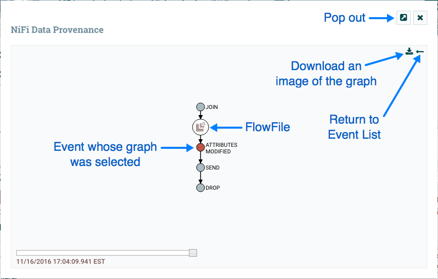

Who is This Guide For?
This guide is written for users who have never used, have had limited exposure to, or only accomplished specific tasks within NiFi. This guide is not intended to be an exhaustive instruction manual or a reference guide. The User Guide provides a great deal of information and is intended to be a much more exhaustive resource and is very useful as a reference guide, as well. This guide, in comparison, is intended to provide users with just the information needed in order to understand how to work with NiFi in order to quickly and easily build powerful and agile dataflows.
Because some of the information in this guide is applicable only for first-time users while other information may be applicable for those who have used NiFi a bit, this guide is broken up into several different sections, some of which may not be useful for some readers. Feel free to jump to the sections that are most appropriate for you.
This guide does expect that the user has a basic understanding of what NiFi is and does not delve into this level of detail. This level of information can be found in the Overview documentation.
Terminology Used in This Guide
In order to talk about NiFi, there are a few key terms that readers should be familiar with. We will explain those NiFi-specific terms here, at a high level.
FlowFile: Each piece of "User Data" (i.e., data that the user brings into NiFi for processing and distribution) is referred to as a FlowFile. A FlowFile is made up of two parts: Attributes and Content. The Content is the User Data itself. Attributes are key-value pairs that are associated with the User Data.
Processor: The Processor is the NiFi component that is responsible for creating, sending, receiving, transforming, routing, splitting, merging, and processing FlowFiles. It is the most important building block available to NiFi users to build their dataflows.
Downloading and Installing NiFi
| Before proceeding, check the Admin Guide to confirm you have the minimum system requirements to install and run NiFi. |
NiFi can be downloaded from the NiFi Downloads page. There are two packaging options available:
-
a "tarball" (tar.gz) that is tailored more to Linux
-
a zip file that is more applicable for Windows users
macOS users may also use the tarball or can install via Homebrew by simply running the command brew install nifi from the command line terminal.
For users who are not running macOS or do not have Homebrew installed, after downloading the version of NiFi that you would like to use, simply extract the archive to the location that you wish to run the application from.
For information on how to configure the instance of NiFi (for example, to configure security, data storage configuration, or the port that NiFi is running on), see the Admin Guide.
Starting NiFi
Once NiFi has been downloaded and installed as described above, it can be started by using the mechanism appropriate for your operating system.
For Windows Users
For Windows users, navigate to the folder where NiFi was installed. Within this folder is a subfolder
named bin. Navigate to this subfolder and double-click the run-nifi.bat file.
This will launch NiFi and leave it running in the foreground. To shut down NiFi, select the window that was launched and hold the Ctrl key while pressing C.
For Linux/macOS users
For Linux and macOS users, use a Terminal window to navigate to the directory where NiFi was installed.
To run NiFi in the foreground, run bin/nifi.sh run. This will leave the application running until
the user presses Ctrl-C. At that time, it will initiate shutdown of the application.
To run NiFi in the background, instead run bin/nifi.sh start. This will initiate the application to
begin running. To check the status and see if NiFi is currently running, execute the command bin/nifi.sh status. NiFi can be shutdown by executing the command bin/nifi.sh stop.
Issuing bin/nifi.sh start executes the nifi.sh script that starts NiFi in the background and then exits. If you want nifi.sh to wait for NiFi to finish scheduling all components before
exiting, use the --wait-for-init flag with an optional timeout specified in seconds: bin/nifi.sh start --wait-for-init 120. If the timeout is not provided, the default timeout of 15 minutes will
be used.
If NiFi was installed with Homebrew, run the commands nifi start or nifi stop from anywhere in your file system to start or stop NiFi.
Installing as a Service
Currently, installing NiFi as a service is supported only for Linux and macOS users. To install the application
as a service, navigate to the installation directory in a Terminal window and execute the command bin/nifi.sh install
to install the service with the default name nifi. To specify a custom name for the service, execute the command
with an optional second argument that is the name of the service. For example, to install NiFi as a service with the
name dataflow, use the command bin/nifi.sh install dataflow.
Once installed, the service can be started and stopped using the appropriate commands, such as sudo service nifi start
and sudo service nifi stop. Additionally, the running status can be checked via sudo service nifi status.
I Started NiFi. Now What?
The default installation generates a random username and password, writing the generated values to the application log.
The application log is located in logs/nifi-app.log under the installation directory. The log file will contain lines
with Generated Username [USERNAME] and Generated Password [PASSWORD] indicating the credentials needed for access.
Search the application log for those lines and record the generated values in a secure location.
The following command can be used to change the username and password:
$ ./bin/nifi.sh set-single-user-credentials <username> <password>Now that NiFi has been started, we can bring up the User Interface (UI) in order to create and monitor our dataflow.
To get started, open a web browser and navigate to https://localhost:8443/nifi. The port can be changed by
editing the nifi.properties file in the NiFi conf directory, but the default port is 8443.
The web browser will display a warning message indicating a potential security risk due to the self-signed certificate NiFi generated during initialization. Accepting the potential security risk and continuing to load the interface is an option for development installations. The self-signed certificate will expire after 60 days. Production deployments should provision a certificate from a trusted authority and update the NiFi keystore and truststore configuration.
Accessing NiFi after accepting the self-signed certificate will display the login screen.
Using the generated credentials, enter the generated username in the User field
and the generated password in the Password field, then select LOG IN to access the system.
This will bring up the User Interface, which at this point is a blank canvas for orchestrating a dataflow:

The UI has multiple tools to create and manage your first dataflow:

The Global Menu contains the following options:

Adding a Processor
We can now begin creating our dataflow by adding a Processor to our canvas. To do this, drag the Processor icon () from the top-left of the screen into the middle of the canvas (the graph paper-like background) and drop it there. This will give us a dialog that allows us to choose which Processor we want to add:

We have quite a few options to choose from. For the sake of becoming oriented with the system, let’s say that we
just want to bring in files from our local disk into NiFi. When a developer creates a Processor, the developer can
assign "tags" to that Processor. These can be thought of as keywords. We can filter by these tags or by Processor
name by typing into the Filter box in the top-right corner of the dialog. Type in the keywords that you would think
of when wanting to ingest files from a local disk. Typing in keyword "file", for instance, will provide us a few
different Processors that deal with files. Filtering by the term "local" will narrow down the list pretty quickly,
as well. If we select a Processor from the list,
we will see a brief description of the Processor near the bottom of the dialog. This should tell us exactly what
the Processor does. The description of the GetFile Processor tells us that it pulls data from our local disk
into NiFi and then removes the local file. We can then double-click the Processor type or select it and choose the
Add button. The Processor will be added to the canvas in the location that it was dropped.
Configuring a Processor
Now that we have added the GetFile Processor, we can configure it by right-clicking on the Processor and choosing
the Configure menu item. The provided dialog allows us to configure many different options that can be read about
in the User Guide, but for the sake of this guide, we will focus on the Properties tab. Once
the Properties tab has been selected, we are given a list of several different properties that we can configure
for the Processor. The properties that are available depend on the type of Processor and are generally different
for each type. Properties that are in bold are required properties. The Processor cannot be started until all required
properties have been configured. The most important property to configure for GetFile is the directory from which
to pick up files. If we set the directory name to ./data-in, this will cause the Processor to start picking up
any data in the data-in subdirectory of the NiFi Home directory. We can choose to configure several different
Properties for this Processor. If unsure what a particular Property does, we can hover over the Help icon (
 )
next to the Property Name with the mouse in order to read a description of the property. Additionally, the
tooltip that is displayed when hovering over the Help icon will provide the default value for that property,
if one exists, information about whether or not the property supports the Expression Language (see the
Expression Language / Using Attributes in Property Values section below), and previously configured values for that property.
)
next to the Property Name with the mouse in order to read a description of the property. Additionally, the
tooltip that is displayed when hovering over the Help icon will provide the default value for that property,
if one exists, information about whether or not the property supports the Expression Language (see the
Expression Language / Using Attributes in Property Values section below), and previously configured values for that property.
In order for this property to be valid, create a directory named data-in in the NiFi home directory and then
click the Ok button to close the dialog.
Connecting Processors
Each Processor has a set of defined "Relationships" that it is able to send data to. When a Processor finishes handling
a FlowFile, it transfers it to one of these Relationships. This allows a user to configure how to handle FlowFiles based
on the result of Processing. For example, many Processors define two Relationships: success and failure. Users are
then able to configure data to be routed through the flow one way if the Processor is able to successfully process
the data and route the data through the flow in a completely different manner if the Processor cannot process the
data for some reason. Or, depending on the use case, it may simply route both relationships to the same route through
the flow.
Now that we have added and configured our GetFile processor and applied the configuration, we can see in the
top-left corner of the Processor an Alert icon (
 ) signaling that the Processor is not in a valid state. Hovering over this icon, we can see that the
) signaling that the Processor is not in a valid state. Hovering over this icon, we can see that the success
relationship has not been defined. This simply means that we have not told NiFi what to do with the data that the Processor
transfers to the success Relationship.
In order to address this, let’s add another Processor that we can connect the GetFile Processor to, by following the same steps above. This time, however, we will simply log the attributes that exist for the FlowFile. To do this, we will add a LogAttributes Processor.
We can now send the output of the GetFile Processor to the LogAttribute Processor. Hover over the GetFile Processor
with the mouse and a Connection Icon (
) will appear over the middle of the Processor. We can drag this icon from the GetFile Processor to the LogAttribute
Processor. This gives us a dialog to choose which Relationships we want to include for this connection. Because GetFile
has only a single Relationship, success, it is automatically selected for us.
Clicking on the Settings tab provides a handful of options for configuring how this Connection should behave:

We can give the Connection a name, if we like. Otherwise, the Connection name will be based on the selected Relationships. We can also set an expiration for the data. By default, it is set to "0 sec" which indicates that the data should not expire. However, we can change the value so that when data in this Connection reaches a certain age, it will automatically be deleted (and a corresponding EXPIRE Provenance event will be created).
The backpressure thresholds allow us to specify how full the queue is allowed to become before the source Processor is no longer scheduled to run. This allows us to handle cases where one Processor is capable of producing data faster than the next Processor is capable of consuming that data. If the backpressure is configured for each Connection along the way, the Processor that is bringing data into the system will eventually experience the backpressure and stop bringing in new data so that our system has the ability to recover.
Finally, we have the Prioritizers on the right-hand side. This allows us to control how the data in this queue is ordered. We can drag Prioritizers from the "Available prioritizers" list to the "Selected prioritizers" list in order to activate the prioritizer. If multiple prioritizers are activated, they will be evaluated such that the Prioritizer listed first will be evaluated first and if two FlowFiles are determined to be equal according to that Prioritizer, the second Prioritizer will be used.
For the sake of this discussion, we can simply click Add to add the Connection to our graph. We should now see that the Alert
icon has changed to a Stopped icon (
 ). The LogAttribute Processor, however, is now invalid because its
). The LogAttribute Processor, however, is now invalid because its success Relationship has not been connected to
anything. Let’s address this by signaling that data that is routed to success by LogAttribute should be "Auto Terminated,"
meaning that NiFi should consider the FlowFile’s processing complete and "drop" the data. To do this, we configure the
LogAttribute Processor. On the Settings tab, in the right-hand side we can check the box next to the success Relationship
to Auto Terminate the data. Clicking OK will close the dialog and show that both Processors are now stopped.
Starting and Stopping Processors
At this point, we have two Processors on our graph, but nothing is happening. In order to start the Processors, we can
click on each one individually and then right-click and choose the Start menu item. Alternatively, we can select the first
Processor, and then hold the Shift key while selecting the other Processor in order to select both. Then, we can
right-click and choose the Start menu item. As an alternative to using the context menu, we can select the Processors and
then click the Start icon in the Operate palette.
Once started, the icon in the top-left corner of the Processors will change from a stopped icon to a running icon. We can then
stop the Processors by using the Stop icon in the Operate palette or the Stop menu item.
Once a Processor has started, we are not able to configure it anymore. Instead, when we right-click on the Processor, we are given the option to view its current configuration. In order to configure a Processor, we must first stop the Processor and wait for any tasks that may be executing to finish. The number of tasks currently executing is shown near the top-right corner of the Processor, but nothing is shown there if there are currently no tasks.
Getting More Info for a Processor
With each Processor having the ability to expose multiple different Properties and Relationships, it can be challenging
to remember how all of the different pieces work for each Processor. To address this, you are able to right-click
on a Processor and choose the Usage menu item. This will provide you with the Processor’s usage information, such as a
description of the Processor, the different Relationships that are available, when the different Relationships are used,
Properties that are exposed by the Processor and their documentation, as well as which FlowFile Attributes (if any) are
expected on incoming FlowFiles and which Attributes (if any) are added to outgoing FlowFiles.
Other Components
The toolbar that provides users the ability to drag and drop Processors onto the graph includes several other components that can be used to build a dataflow. These components include Input and Output Ports, Funnels, Process Groups, and Remote Process Groups. Due to the intended scope of this document, we will not discuss these elements here, but information is readily available in the Building a Dataflow section of the User Guide.
What Processors are Available
In order to create an effective dataflow, the users must understand what types of Processors are available to them. NiFi contains many different Processors out of the box. These Processors provide capabilities to ingest data from numerous different systems, route, transform, process, split, and aggregate data, and distribute data to many systems.
The number of Processors that are available increases in nearly each release of NiFi. As a result, we will not attempt to name each of the Processors that are available, but we will highlight some of the most frequently used Processors, categorizing them by their functions.
Data Transformation
-
CompressContent: Compress or Decompress Content
-
ConvertCharacterSet: Convert the character set used to encode the content from one character set to another
-
EncryptContent: Encrypt or Decrypt Content
-
ReplaceText: Use Regular Expressions to modify textual Content
-
TransformXml: Apply an XSLT transform to XML Content
-
JoltTransformJSON: Apply a JOLT specification to transform JSON Content
Routing and Mediation
-
ControlRate: Throttle the rate at which data can flow through one part of the flow
-
DetectDuplicate: Monitor for duplicate FlowFiles, based on some user-defined criteria. Often used in conjunction with HashContent
-
DistributeLoad: Load balance or sample data by distributing only a portion of data to each user-defined Relationship
-
MonitorActivity: Sends a notification when a user-defined period of time elapses without any data coming through a particular point in the flow. Optionally send a notification when dataflow resumes.
-
RouteOnAttribute: Route FlowFile based on the attributes that it contains.
-
ScanAttribute: Scans the user-defined set of Attributes on a FlowFile, checking to see if any of the Attributes match the terms found in a user-defined dictionary.
-
RouteOnContent: Search Content of a FlowFile to see if it matches any user-defined Regular Expression. If so, the FlowFile is routed to the configured Relationship.
-
ScanContent: Search Content of a FlowFile for terms that are present in a user-defined dictionary and route based on the presence or absence of those terms. The dictionary can consist of either textual entries or binary entries.
-
ValidateXml: Validation XML Content against an XML Schema; routes FlowFile based on whether or not the Content of the FlowFile is valid according to the user-defined XML Schema.
Database Access
-
ConvertJSONToSQL: Convert a JSON document into a SQL INSERT or UPDATE command that can then be passed to the PutSQL Processor
-
ExecuteSQL: Executes a user-defined SQL SELECT command, writing the results to a FlowFile in Avro format
-
PutSQL: Updates a database by executing the SQL DDM statement defined by the FlowFile’s content
-
SelectHiveQL: Executes a user-defined HiveQL SELECT command against an Apache Hive database, writing the results to a FlowFile in Avro or CSV format
-
PutHiveQL: Updates a Hive database by executing the HiveQL DDM statement defined by the FlowFile’s content
Attribute Extraction
-
EvaluateJsonPath: User supplies JSONPath Expressions (Similar to XPath, which is used for XML parsing/extraction), and these Expressions are then evaluated against the JSON Content to either replace the FlowFile Content or extract the value into the user-named Attribute.
-
EvaluateXPath: User supplies XPath Expressions, and these Expressions are then evaluated against the XML Content to either replace the FlowFile Content or extract the value into the user-named Attribute.
-
EvaluateXQuery: User supplies an XQuery query, and this query is then evaluated against the XML Content to either replace the FlowFile Content or extract the value into the user-named Attribute.
-
ExtractText: User supplies one or more Regular Expressions that are then evaluated against the textual content of the FlowFile, and the values that are extracted are then added as user-named Attributes.
-
HashAttribute: Performs a hashing function against the concatenation of a user-defined list of existing Attributes.
-
HashContent: Performs a hashing function against the content of a FlowFile and adds the hash value as an Attribute.
-
IdentifyMimeType: Evaluates the content of a FlowFile in order to determine what type of file the FlowFile encapsulates. This Processor is capable of detecting many different MIME Types, such as images, word processor documents, text, and compression formats just to name a few.
-
UpdateAttribute: Adds or updates any number of user-defined Attributes to a FlowFile. This is useful for adding statically configured values, as well as deriving Attribute values dynamically by using the Expression Language. This processor also provides an "Advanced User Interface," allowing users to update Attributes conditionally, based on user-supplied rules.
System Interaction
-
ExecuteProcess: Runs the user-defined Operating System command. The Process’s StdOut is redirected such that the content that is written to StdOut becomes the content of the outbound FlowFile. This Processor is a Source Processor - its output is expected to generate a new FlowFile, and the system call is expected to receive no input. In order to provide input to the process, use the ExecuteStreamCommand Processor.
-
ExecuteStreamCommand: Runs the user-defined Operating System command. The contents of the FlowFile are optionally streamed to the StdIn of the process. The content that is written to StdOut becomes the content of hte outbound FlowFile. This Processor cannot be used a Source Processor - it must be fed incoming FlowFiles in order to perform its work. To perform the same type of functionality with a Source Processor, see the ExecuteProcess Processor.
Data Ingestion
-
GetFile: Streams the contents of a file from a local disk (or network-attached disk) into NiFi and then deletes the original file. This Processor is expected to move the file from one location to another location and is not to be used for copying the data.
-
GetFTP: Downloads the contents of a remote file via FTP into NiFi and then deletes the original file. This Processor is expected to move the data from one location to another location and is not to be used for copying the data.
-
GetSFTP: Downloads the contents of a remote file via SFTP into NiFi and then deletes the original file. This Processor is expected to move the data from one location to another location and is not to be used for copying the data.
-
GetJMSQueue: Downloads a message from a JMS Queue and creates a FlowFile based on the contents of the JMS message. The JMS Properties are optionally copied over as Attributes, as well.
-
GetJMSTopic: Downloads a message from a JMS Topic and creates a FlowFile based on the contents of the JMS message. The JMS Properties are optionally copied over as Attributes, as well. This Processor supports both durable and non-durable subscriptions.
-
GetHTTP: Downloads the contents of a remote HTTP- or HTTPS-based URL into NiFi. The Processor will remember the ETag and Last-Modified Date in order to ensure that the data is not continually ingested.
-
ListenHTTP: Starts an HTTP (or HTTPS) Server and listens for incoming connections. For any incoming POST request, the contents of the request are written out as a FlowFile, and a 200 response is returned.
-
ListenUDP: Listens for incoming UDP packets and creates a FlowFile per packet or per bundle of packets (depending on configuration) and emits the FlowFile to the 'success' relationship.
-
GetHDFS: Monitors a user-specified directory in HDFS. Whenever a new file enters HDFS, it is copied into NiFi and deleted from HDFS. This Processor is expected to move the file from one location to another location and is not to be used for copying the data. This Processor is also expected to be run On Primary Node only, if run within a cluster. In order to copy the data from HDFS and leave it in-tact, or to stream the data from multiple nodes in the cluster, see the ListHDFS Processor.
-
ListHDFS / FetchHDFS: ListHDFS monitors a user-specified directory in HDFS and emits a FlowFile containing the filename for each file that it encounters. It then persists this state across the entire NiFi cluster by way of a Distributed Cache. These FlowFiles can then be fanned out across the cluster and sent to the FetchHDFS Processor, which is responsible for fetching the actual content of those files and emitting FlowFiles that contain the content fetched from HDFS.
-
FetchS3Object: Fetches the contents of an object from the Amazon Web Services (AWS) Simple Storage Service (S3). The outbound FlowFile contains the contents received from S3.
-
GetKafka: Fetches messages from Apache Kafka, specifically for 0.8.x versions. The messages can be emitted as a FlowFile per message or can be batched together using a user-specified delimiter.
-
GetMongo: Executes a user-specified query against MongoDB and writes the contents to a new FlowFile.
-
GetTwitter: Allows Users to register a filter to listen to the Twitter "garden hose" or Enterprise endpoint, creating a FlowFile for each tweet that is received.
Data Egress / Sending Data
-
PutEmail: Sends an E-mail to the configured recipients. The content of the FlowFile is optionally sent as an attachment.
-
PutFile: Writes the contents of a FlowFile to a directory on the local (or network attached) file system.
-
PutFTP: Copies the contents of a FlowFile to a remote FTP Server.
-
PutSFTP: Copies the contents of a FlowFile to a remote SFTP Server.
-
PutJMS: Sends the contents of a FlowFile as a JMS message to a JMS broker, optionally adding JMS Properties based on Attributes.
-
PutSQL: Executes the contents of a FlowFile as a SQL DDL Statement (INSERT, UPDATE, or DELETE). The contents of the FlowFile must be a valid SQL statement. Attributes can be used as parameters so that the contents of the FlowFile can be parameterized SQL statements in order to avoid SQL injection attacks.
-
PutKafka: Sends the contents of a FlowFile as a message to Apache Kafka, specifically for 0.8.x versions. The FlowFile can be sent as a single message or a delimiter, such as a new-line can be specified, in order to send many messages for a single FlowFile.
-
PutMongo: Sends the contents of a FlowFile to Mongo as an INSERT or an UPDATE.
Splitting and Aggregation
-
SplitText: SplitText takes in a single FlowFile whose contents are textual and splits it into 1 or more FlowFiles based on the configured number of lines. For example, the Processor can be configured to split a FlowFile into many FlowFiles, each of which is only 1 line.
-
SplitJson: Allows the user to split a JSON object that is comprised of an array or many child objects into a FlowFile per JSON element.
-
SplitXml: Allows the user to split an XML message into many FlowFiles, each containing a segment of the original. This is generally used when several XML elements have been joined together with a "wrapper" element. This Processor then allows those elements to be split out into individual XML elements.
-
UnpackContent: Unpacks different types of archive formats, such as ZIP and TAR. Each file within the archive is then transferred as a single FlowFile.
-
MergeContent: This Processor is responsible for merging many FlowFiles into a single FlowFile. The FlowFiles can be merged by concatenating their content together along with optional header, footer, and demarcator, or by specifying an archive format, such as ZIP or TAR. FlowFiles can be binned together based on a common attribute, or can be "defragmented" if they were split apart by some other Splitting process. The minimum and maximum size of each bin is user-specified, based on number of elements or total size of FlowFiles' contents, and an optional Timeout can be assigned as well so that FlowFiles will only wait for their bin to become full for a certain amount of time.
-
SegmentContent: Segments a FlowFile into potentially many smaller FlowFiles based on some configured data size. The splitting is not performed against any sort of demarcator but rather just based on byte offsets. This is used before transmitting FlowFiles in order to provide lower latency by sending many different pieces in parallel. On the other side, these FlowFiles can then be reassembled by the MergeContent processor using the Defragment mode.
-
SplitContent: Splits a single FlowFile into potentially many FlowFiles, similarly to SegmentContent. However, with SplitContent, the splitting is not performed on arbitrary byte boundaries but rather a byte sequence is specified on which to split the content.
HTTP
-
GetHTTP: Downloads the contents of a remote HTTP- or HTTPS-based URL into NiFi. The Processor will remember the ETag and Last-Modified Date in order to ensure that the data is not continually ingested.
-
ListenHTTP: Starts an HTTP (or HTTPS) Server and listens for incoming connections. For any incoming POST request, the contents of the request are written out as a FlowFile, and a 200 response is returned.
-
InvokeHTTP: Performs an HTTP Request that is configured by the user. This Processor is much more versatile than the GetHTTP and PostHTTP but requires a bit more configuration. This Processor cannot be used as a Source Processor and is required to have incoming FlowFiles in order to be triggered to perform its task.
-
PostHTTP: Performs an HTTP POST request, sending the contents of the FlowFile as the body of the message. This is often used in conjunction with ListenHTTP in order to transfer data between two different instances of NiFi in cases where Site-to-Site cannot be used (for instance, when the nodes cannot access each other directly and are able to communicate through an HTTP proxy). Note: HTTP is available as a Site-to-Site transport protocol in addition to the existing RAW socket transport. It also supports HTTP Proxy. Using HTTP Site-to-Site is recommended since it’s more scalable, and can provide bi-directional data transfer using input/output ports with better user authentication and authorization.
-
HandleHttpRequest / HandleHttpResponse: The HandleHttpRequest Processor is a Source Processor that starts an embedded HTTP(S) server similarly to ListenHTTP. However, it does not send a response to the client. Instead, the FlowFile is sent out with the body of the HTTP request as its contents and attributes for all of the typical Servlet parameters, headers, etc. as Attributes. The HandleHttpResponse then is able to send a response back to the client after the FlowFile has finished being processed. These Processors are always expected to be used in conjunction with one another and allow the user to visually create a Web Service within NiFi. This is particularly useful for adding a front-end to a non-web- based protocol or to add a simple web service around some functionality that is already performed by NiFi, such as data format conversion.
Amazon Web Services
-
FetchS3Object: Fetches the content of an object stored in Amazon Simple Storage Service (S3). The content that is retrieved from S3 is then written to the content of the FlowFile.
-
PutS3Object: Writes the contents of a FlowFile to an Amazon S3 object using the configured credentials, key, and bucket name.
-
PutSNS: Sends the contents of a FlowFile as a notification to the Amazon Simple Notification Service (SNS).
-
GetSQS: Pulls a message from the Amazon Simple Queuing Service (SQS) and writes the contents of the message to the content of the FlowFile.
-
PutSQS: Sends the contents of a FlowFile as a message to the Amazon Simple Queuing Service (SQS).
-
DeleteSQS: Deletes a message from the Amazon Simple Queuing Service (SQS). This can be used in conjunction with the GetSQS in order to receive a message from SQS, perform some processing on it, and then delete the object from the queue only after it has successfully completed processing.
Working With Attributes
Each FlowFile is created with several Attributes, and these Attributes will change over the life of the FlowFile. The concept of a FlowFile is extremely powerful and provides three primary benefits. First, it allows the user to make routing decisions in the flow so that FlowFiles that meet some criteria can be handled differently than other FlowFiles. This is done using the RouteOnAttribute and similar Processors.
Secondly, Attributes are used in order to configure Processors in such a way that the configuration of the Processor is dependent on the data itself. For instance, the PutFile Processor is able to use the Attributes in order to know where to store each FlowFile, while the directory and filename Attributes may be different for each FlowFile.
Finally, the Attributes provide extremely valuable context about the data. This is useful when reviewing the Provenance data for a FlowFile. This allows the user to search for Provenance data that match specific criteria, and it also allows the user to view this context when inspecting the details of a Provenance Event. By doing this, the user is then able to gain valuable insight as to why the data was processed one way or another, simply by glancing at this context that is carried along with the content.
Common Attributes
Each FlowFile has a minimum set of Attributes:
-
filename: A filename that can be used to store the data to a local or remote file system.
-
path: The name of a directory that can be used to store the data to a local or remote file system.
-
uuid: A Universally Unique Identifier that distinguishes the FlowFile from other FlowFiles in the system.
-
entryDate: The date and time at which the FlowFile entered the system (i.e., was created). The value of this attribute is a number that represents the number of milliseconds since midnight, Jan. 1, 1970 (UTC).
-
lineageStartDate: Any time that a FlowFile is cloned, merged, or split, this results in a "child" FlowFile being created. As those children are then cloned, merged, or split, a chain of ancestors is built. This value represents the date and time at which the oldest ancestor entered the system. Another way to think about this is that this attribute represents the latency of the FlowFile through the system. The value is a number that represents the number of milliseconds since midnight, Jan. 1, 1970 (UTC).
-
fileSize: This attribute represents the number of bytes taken up by the FlowFile’s Content.
Note that the uuid, entryDate, lineageStartDate, and fileSize attributes are system-generated and cannot be changed.
Extracting Attributes
NiFi provides several different Processors out of the box for extracting Attributes from FlowFiles. A list of commonly used Processors for this purpose can be found above in the Attribute Extraction section. This is a very common use case for building custom Processors, as well. Many Processors are written to understand a specific data format and extract pertinent information from a FlowFile’s content, creating Attributes to hold that information, so that decisions can then be made about how to route or process the data.
Adding User-Defined Attributes
In addition to having Processors that are able to extract particular pieces of information from FlowFile content into Attributes, it is also common for users to want to add their own user-defined Attributes to each FlowFile at a particular place in the flow. The UpdateAttribute Processor is designed specifically for this purpose. Users are able to add a new property to the Processor in the Configure dialog by clicking the "+" button in the top-right corner of the Properties tab. The user is then prompted to enter the name of the property and then a value. For each FlowFile that is processed by this UpdateAttribute Processor, an Attribute will be added for each user-defined property. The name of the Attribute will be the same as the name of the property that was added. The value of the Attribute will be the same as the value of the property.
The value of the property may contain the Expression Language, as well. This allows Attributes to be modified or added
based on other Attributes. For example, if we want to prepend the hostname that is processing a file as well as the date to
a filename, we could do this by adding a property with the name filename and the value ${hostname()}-${now():format('yyyy-dd-MM')}-${filename}.
While this may seem confusing at first, the section below on Expression Language / Using Attributes in Property Values will help to clear up what is going on
here.
In addition to always adding a defined set of Attributes, the UpdateAttribute Processor has an Advanced UI that allows the user
to configure a set of rules for which Attributes should be added when. To access this capability, in the Configure dialog’s
Properties tab, click the Advanced button at the bottom of the dialog. This will provide a UI that is tailored specifically
to this Processor, rather than the simple Properties table that is provided for all Processors. Within this UI, the user is able
to configure a rules engine, essentially, specifying rules that must match in order to have the configured Attributes added
to the FlowFile.
Routing on Attributes
One of the most powerful features of NiFi is the ability to route FlowFiles based on their Attributes. The primary mechanism for doing this is the RouteOnAttribute Processor. This Processor, like UpdateAttribute, is configured by adding user-defined properties. Any number of properties can be added by clicking the "+" button in the top-right corner of the Properties tab in the Processor’s Configure dialog.
Each FlowFile’s Attributes will be compared against the configured properties to determine whether or not the FlowFile meets the specified criteria. The value of each property is expected to be an Expression Language expression and return a boolean value. For more on the Expression Language, see the Expression Language / Using Attributes in Property Values section below.
After evaluating the Expression Language expressions provided against the FlowFile’s Attributes, the Processor determines how to route the FlowFile based on the Routing Strategy selected. The most common strategy is the "Route to Property name" strategy. With this strategy selected, the Processor will expose a Relationship for each property configured. If the FlowFile’s Attributes satisfy the given expression, a copy of the FlowFile will be routed to the corresponding Relationship. For example, if we had a new property with the name "begins-with-r" and the value "${filename:startsWith(\'r')}" then any FlowFile whose filename starts with the letter 'r' will be routed to that Relationship. All other FlowFiles will be routed to 'unmatched'.
Expression Language / Using Attributes in Property Values
As we extract Attributes from FlowFiles' contents and add user-defined Attributes, they don’t do us much good as an operator unless
we have some mechanism by which we can use them. The NiFi Expression Language allows us to access and manipulate FlowFile Attribute
values as we configure our flows. Not all Processor properties allow the Expression Language to be used, but many do. In order to
determine whether or not a property supports the Expression Language, a user can hover over the Help icon (
) in the Properties tab of the Processor Configure dialog. This will provide a tooltip that shows a description of the property, the
default value, if any, and whether or not the property supports the Expression Language.
For properties that do support the Expression Language, it is used by adding an expression within the opening ${ tag and the closing
} tag. An expression can be as simple as an attribute name. For example, to reference the uuid Attribute, we can simply use the
value ${uuid}. If the Attribute name begins with any character other than a letter, or if it contains a character other than
a number, a letter, a period (.), or an underscore (_), the Attribute name will need to be quoted. For example, ${My Attribute Name}
will be invalid, but ${'My Attribute Name'} will refer to the Attribute My Attribute Name.
In addition to referencing Attribute values, we can perform a number of functions and comparisons on those Attributes. For example,
if we want to check if the filename attribute contains the letter 'r' without paying attention to case (upper case or lower case),
we can do this by using the expression ${filename:toLower():contains('r')}. Note here that the functions are separated by colons.
We can chain together any number of functions to build up more complex expressions. It is also important to understand here that even
though we are calling filename:toLower(), this does not alter the value of the filename Attribute in anyway but rather just gives
us a new value to work with.
We can also embed one expression within another. For example, if we wanted to compare the value of the attr1 Attribute to
the value of the attr2 Attribute, we can do this with the following expression: ${attr1:equals( ${attr2} )}.
The Expression Language contains many different functions that can be used in order to perform the tasks needed for routing and manipulating Attributes. Functions exist for parsing and manipulating strings, comparing string and numeric values, manipulating and replacing values, and comparing values. A full explanation of the different functions available is out of the scope of this document, but the Expression Language Guide provides far greater detail for each of the functions.
In addition, this Expression Language guide is built in to the application so that users are able to easily see which functions are available and see their documentation while typing. When setting the value of a property that supports the Expression Language, if the cursor is within the Expression Language start and end tags, pressing Ctrl + Space on the keyword will provide a pop-up of all of the available functions and will provide auto-complete functionality. Clicking on or using the keyboard to navigate to one of the functions listed in the pop-up will cause a tooltip to show, which explains what the function does, the arguments that it expects, and the return type of the function.
Custom Properties Within Expression Language
In addition to using FlowFile attributes, you can also define custom properties for Expression Language use. Defining custom properties gives you additional flexibility in processing and configuring dataflows. For example, you can refer to custom properties for connection, server, and service properties. Once you have created custom properties, you can identify their location in the nifi.variable.registry.properties field in the 'nifi.properties' file. After you have updated the 'nifi.properties' file and restarted NiFi, you are able to use custom properties as needed.
Working With Templates
As we use Processors to build more and more complex dataflows in NiFi, we often will find that we string together the same sequence of Processors to perform some task. This can become tedious and inefficient. To address this, NiFi provides a concept of Templates. A template can be thought of as a reusable sub-flow. To create a template, follow these steps:
-
Select the components to include in the template. We can select multiple components by clicking on the first component and then holding the Shift key while selecting additional components (to include the Connections between those components), or by holding the Shift key while dragging a box around the desired components on the canvas.
-
Select the Create Template Icon (
 ) from the Operate palette.
) from the Operate palette. -
Provide a name and optionally a description for the template.
-
Click the
Createbutton.
Once we have created a template, we can now use it as a building block in our flow, just as we would a Processor. To do this, we will
click and drag the Template icon (
 ) from the Component toolbar onto our canvas. We can then choose the template that we would like to add
to our canvas and click the
) from the Component toolbar onto our canvas. We can then choose the template that we would like to add
to our canvas and click the Add button.
Finally, we have the ability to manage our templates by using the Template Management dialog. To access this dialog, select Templates from the Global Menu. From here, we can see which templates exist and filter the templates to find the templates of interest. On the right-hand side of the table is an icon to Export, or Download, the template as an XML file. This can then be provided to others so that they can use your template.
To import a template into your NiFi instance, select the Upload Template icon (
 ) from the Operator palette, click the Search Icon and navigate to the file on
your computer. Then click the
) from the Operator palette, click the Search Icon and navigate to the file on
your computer. Then click the Upload button. The template will now show up in your table, and you can drag it onto your canvas as you would
any other template that you have created.
There are a few important notes to remember when working with templates:
-
Any properties that are identified as being Sensitive Properties (such as a password that is configured in a Processor) will not be added to the template. These sensitive properties will have to be populated each time that the template is added to the canvas.
-
If a component that is included in the template references a Controller Service, the Controller Service will also be added to the template. This means that each time that the template is added to the graph, it will create a copy of the Controller Service.
Monitoring NiFi
As data flows through your dataflow in NiFi, it is important to understand how well your system is performing in order to assess if you will require more resources and in order to assess the health of your current resources. NiFi provides a few mechanisms for monitoring your system.
Status Bar
Near the top of the NiFi screen under the Component toolbar is a bar that is referred to as the Status Bar. It contains a few important statistics about the current health of NiFi. The number of Active Threads can indicate how hard NiFi is currently working, and the Queued stat indicates how many FlowFiles are currently queued across the entire flow, as well as the total size of those FlowFiles.
If the NiFi instance is in a cluster, we will also see an indicator here telling us how many nodes are in the cluster and how many are currently connected. In this case, the number of active threads and the queue size are indicative of all the sum of all nodes that are currently connected. It is important to note that active threads only captures threads by objects that are in the graph (processors, processor groups, remote processor groups, funnels, etc.). When broken down by node in the cluster (Global Menu → Cluster), the active thread count is more comprehensive and includes these as well as any other threads (reporting tasks, controller services, etc.)
Component Statistics
Each Processor, Process Group, and Remote Process Group on the canvas provides several statistics about how much data has been processed by the component. These statistics provide information about how much data has been processed in the past five minutes. This is a rolling window and allows us to see things like the number of FlowFiles that have been consumed by a Processor, as well as the number of FlowFiles that have been emitted by the Processor.
The connections between Processors also expose the number of items that are currently queued.
It may also be valuable to see historical values for these metrics and, if clustered, how the different nodes compare to one another.
In order to see this information, we can right-click on a component and choose the Stats menu item. This will show us a graph that spans
the time since NiFi was started, or up to 24 hours, whichever is less. The amount of time that is shown here can be extended or reduced
by changing the configuration in the properties file.
In the top-right corner of this dialog is a drop-down that allows the user to select which metric they are viewing. The graph on the bottom allows the user to select a smaller portion of the graph to zoom in.
Bulletins
In addition to the statistics provided by each component, a user will want to know if any problems occur. While we could monitor the logs for anything interesting, it is much more convenient to have notifications pop up on the screen. If a Processor logs anything as a WARNING or ERROR, we will see a "Bulletin Indicator" show up in the top-right-hand corner of the Processor. This indicator looks like a sticky note and will be shown for five minutes after the event occurs. Hovering over the bulletin provides information about what happened so that the user does not have to sift through log messages to find it. If in a cluster, the bulletin will also indicate which node in the cluster emitted the bulletin. We can also change the log level at which bulletins will occur in the Settings tab of the Configure dialog for a Processor.
If the framework emits a bulletin, we will also see a bulletin indicator highlighted at the top-right of the screen. In the Global Menu is a Bulletin Board option. Clicking this option will take us to the bulletin board where we can see all bulletins that occur across the NiFi instance and can filter based on the component, the message, etc.
Data Provenance
NiFi keeps a very granular level of detail about each piece of data that it ingests. As the data is processed through the system and is transformed, routed, split, aggregated, and distributed to other endpoints, this information is all stored within NiFi’s Provenance Repository. In order to search and view this information, we can select Data Provenance from the Global Menu. This will provide us a table that lists the Provenance events that we have searched for:
Initially, this table is populated with the most recent 1,000 Provenance Events that have occurred (though it may take a few
seconds for the information to be processed after the events occur). From this dialog, there is a Search button that allows the
user to search for events that happened by a particular Processor, for a particular FlowFile by filename or UUID, or several other
fields. The nifi.properties file provides the ability to configure which of these properties are indexed, or made searchable.
Additionally, the properties file also allows you to choose specific FlowFile Attributes that will be indexed. As a result, you can
choose which Attributes will be important to your specific dataflows and make those Attributes searchable.
Event Details
Once we have performed our search, our table will be populated only with the events that match the search criteria. From here, we
can choose the Info icon (
 ) on the left-hand side of the table to view the details of that event:
) on the left-hand side of the table to view the details of that event:

From here, we can see exactly when that event occurred, which FlowFile the event affected, which component (Processor, etc.) performed the event, how long the event took, and the overall time that the data had been in NiFi when the event occurred (total latency).
The next tab provides a listing of all Attributes that existed on the FlowFile at the time that the event occurred:

From here, we can see all the Attributes that existed on the FlowFile when the event occurred, as well as the previous values for those Attributes. This allows us to know which Attributes changed as a result of this event and how they changed. Additionally, in the right-hand corner is a checkbox that allows the user to see only those Attributes that changed. This may not be particularly useful if the FlowFile has only a handful of Attributes, but can be very helpful when a FlowFile has hundreds of Attributes.
This is very important because it allows the user to understand the exact context in which the FlowFile was processed. It is helpful to understand 'why' the FlowFile was processed the way that it was, especially when the Processor was configured using the Expression Language.
Finally, we have the Content tab:

This tab provides us information about where in the Content Repository the FlowFile’s content was stored. If the event modified the content of the FlowFile, we will see the 'before' (input) and 'after' (output) content claims. We are then given the option to Download the content or to View the content within NiFi itself, if the data format is one that NiFi understands how to render.
Additionally, in the Replay section of the tab, there is a 'Replay' button that allows the user to re-insert the FlowFile into the flow and re-process it from exactly the point at which the event happened. This provides a very powerful mechanism, as we are able to modify our flow in real time, re-process a FlowFile, and then view the results. If they are not as expected, we can modify the flow again, and re-process the FlowFile again. We are able to perform this iterative development of the flow until it is processing the data exactly as intended.
Lineage Graph
In addition to viewing the details of a Provenance event, we can also view the lineage of the FlowFile involved by clicking on the Lineage Icon (
 ) from the table view.
) from the table view.
This provides us with a graphical representation of exactly what happened to that piece of data as it traversed the system:

From here, we can right-click on any of the events represented and click the View Details menu item to see the Event Details.
This graphical representation shows us exactly which events occurred to the data. There are a few "special" event types to be
aware of. If we see a JOIN, FORK, or CLONE event, we can right-click and choose to Find Parents or Expand. This allows us to
see the lineage of parent FlowFiles and children FlowFiles that were created as well.
The slider in the bottom-left corner allows us to see the time at which these events occurred. By sliding it left and right, we can see which events introduced latency into the system so that we have a very good understanding of where in our system we may need to provide more resources, such as the number of Concurrent Tasks for a Processor. Or it may reveal, for example, that most of the latency was introduced by a JOIN event, in which we were waiting for more FlowFiles to join together. In either case, the ability to easily see where this is occurring is a very powerful feature that will help users to understand how the enterprise is operating.
Where To Go For More Information
The NiFi community has built up a significant amount of documentation on how to use the software. The following guides are available, in addition to this Getting Started Guide:
-
Apache NiFi Overview - Provides an overview of what Apache NiFi is, what it does, and why it was created.
-
Apache NiFi User Guide - A fairly extensive guide that is often used more as a Reference Guide, as it has pretty lengthy discussions of all of the different components that comprise the application. This guide is written with the NiFi Operator as its audience. It provides information on each of the different components available in NiFi and explains how to use the different features provided by the application.
-
Administration Guide - A guide for setting up and administering Apache NiFi for production environments. This guide provides information about the different system-level settings, such as setting up clusters of NiFi and securing access to the web UI and data.
-
Expression Language Guide - A far more exhaustive guide for understanding the Expression Language than is provided above. This guide is the definitive documentation for the NiFi Expression Language. It provides an introduction to the EL and an explanation of each function, its arguments, and return types as well as providing examples.
-
Developer’s Guide - While not an exhaustive guide to All Things NiFi Development, this guide does provide a comprehensive overview of the different API’s available and how they should be used. In addition, it provides Best Practices for developing NiFi components and common Processor idioms to help aid in understanding the logic behind many of the existing NiFi components.
-
Contributor’s Guide - A guide for explaining how to contribute work back to the Apache NiFi community so that others can make use of it.
Several blog postings have also been added to the Apache NiFi blog site: https://blogs.apache.org/nifi/
In addition to the blog and guides provided here, you can browse the different NiFi Mailing Lists or send an e-mail to one of the mailing lists at users@nifi.apache.org or dev@nifi.apache.org.
Many of the members of the NiFi community are also available on Twitter and actively monitor for tweets that mention @apachenifi.